在中世纪的林肯郡，一个pimp加上一个dik，你会得到一个bumfit [1] 。这没什么不光彩的。在牧羊人数羊时使用的行话中，这些词仅代表数字5、10和15。完整的数列是：
1. Yan
2. Tan
3. Tethera
4. Pethera
5. Pimp
6. Sethera
7. Lethera
8. Hovera
9. Covera
10. Dik
11. Yan-a-dik
12. Tan-a-dik
13. Tethera-dik
14. Pethera-dik
15. Bumfit
16. Yan-a-bumfit
17. Tan-a-bumfit
18. Tethera-bumfit
19. Pethera-bumfit
20. Figgit
这与我们现在的数数方法不同，不仅仅是因为这些单词我们都不太熟悉。林肯郡的牧羊人把每20个数字分为一组，从yan（1）开始计数，到figgit（20）结束。如果一位牧羊人有20多只羊，且他没有因为数羊睡着的话，那么他会在口袋里放一块鹅卵石，或者在地上做个记号，或者在手杖上刮一条线，以此记下他数完了一个循环。然后他会从头再来：“Yan，tan，tethera……”如果他有80只羊，他的口袋里最后会有4块鹅卵石，或者手杖上有4条线。这个系统对牧羊人来说非常有效，他用4个小物件代表了80个大物件。
在现代社会，我们把数字分为10个一组，所以我们的数字系统有10个数字，它们是0、1、2、3、4、5、6、7、8和9。用来计数的数字个数，通常也就是数字符号的个数，是一个数字系统的基数。我们的十进制系统基数为10，而牧羊人所使用的系统的基数则是20。
没有合理的基数，处理起数字来就会很难。想象一下，如果牧羊人的系统是一进制的，这意味着他只有一个数词，yan代表1，那2就是yan yan，3是yan yan yan，80只羊就需要说80遍yan。这个系统对数3以上的东西简直完全没用。又或者，假设每个数字都用一个不同的单词表示，这样的话，想数到80就需要记住80个不同的单词。要是这样数到1000，那可真是难以想象。
许多孤立的族群仍然使用非常规的数字系统。例如，亚马孙地区的阿拉拉人是成对计数的，他们从1到8的数字如下：anane、adak、adak anane、adak adak、adak adak anane、adak adak adak、adak adak adak anane、adak adak adak adak。他们两个两个地数数，并没有比一个一个地数有多大进步。要表示100，需要连续重复50次adak，可以想象市场上的讨价还价有多耗时。亚马孙地区也有3个数和4个数成一组的系统计数。
要构建一个好的计数系统，基数必须够大，这样在表示100这样的数字时才不会喘不过气，但基数也不能太大，这样就不需要我们记忆很多东西。历史上最常见的基数是5、10和20，原因显而易见：这些数字来自人体。我们一只手上有5根手指，所以从一开始数数时，数到5自然就到了换口气的时候。下一个自然的停顿出现在数完两只手，也就是10根手指的时候，之后是手加上脚，也就是20根手指和脚趾。（有些系统把这些基数结合在了一起。例如，林肯郡的绵羊计数词典包含基数5和10以及20：前10个数字单独列，后10个数字里每5个构成一组。）许多数词都反映出手指在计数中所起的作用，比如很多数字同时都有与手有关的意思。例如，俄语中的5是piat，而“伸出的手”是piast。同样，梵文中的数词5是pantcha，它与波斯语中的“手”——pentcha有关。
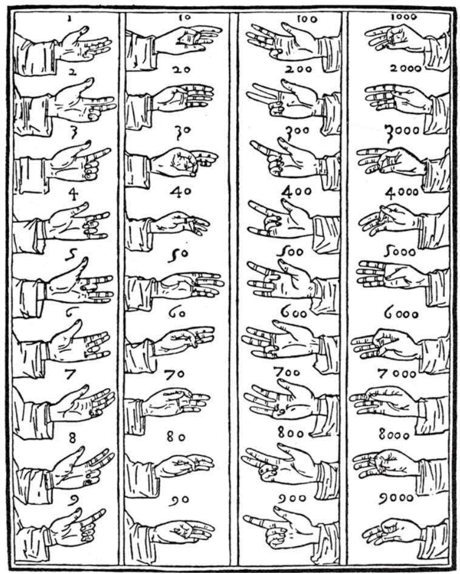
图1-1 卢卡·帕乔利（Luca Pacioli）在《算术、几何与比例概要》（1494）里记载的手指计数
从人类开始数数的那一刻起，人们就在用手指作为辅助，毫不夸张地说，我们大量的科学进步都要归功于我们灵活的手指。如果人类在出生时四肢末端是扁平的残肢，可以合理推测，人类的智力进化或许不会超过石器时代的水平。在可以轻易写下数字的纸和笔被广泛使用之前，人们通常是通过精心设计的计数手语来交流的。在8世纪，诺森布里亚的神学家圣比德（Venerable Bede）提出了一个能数到100万的系统，这个系统将算术和双手都利用了起来。它用左手的手指表示个位和十位，右手表示百和千，更高的数量级通过手在身体上的上下移动来表达。比德写到，有一个不太体面的画面可以表示90000：“左手抓住腰部，拇指朝向生殖器。”更能唤起人们共鸣的是表示100万的姿势，那是一种取得成就和事情结束时的自我满足的姿态：双手合十，手指交叉。
几百年前的算术手册，几乎都包含手指计数的图像。现在，虽然这种做法基本上成了一种失传的艺术，但它在世界某些地区仍然延续着。印度的商人如果想对旁观者隐瞒交易，就会在斗篷或衣服后面触摸指关节。中国人有一种巧妙（尽管也过于复杂）的技巧，能让你数到9999999999。如图1-2所示，假设每根手指上都有9个点，每个关节上有3个。右手小指上的点代表数字1到9，右手无名指上的点代表10到90，右中指上的点代表100到900，以此类推。你只需用手指就能数出地球上所有的人，这种方法可以把整个世界掌握在你的手中。
在一些文化中，人们更喜欢使用身体来计数，而非只用手指和脚趾。19世纪末，由英国人类学家组成的一支探险队到达了托雷斯海峡中的岛屿，托雷斯海峡位于澳大利亚和巴布亚新几内亚之间。在那里生活的一个群体用右手小指表示1，右手无名指表示2，以此类推，在右手手指用完后，他们用右手手腕表示6，右手肘表示7，接着是肩膀、胸骨、左手臂、左手、脚和腿，右脚小脚趾代表33。后续的探险和研究发现，该地区的许多群体都有着类似的“人体计数”系统。
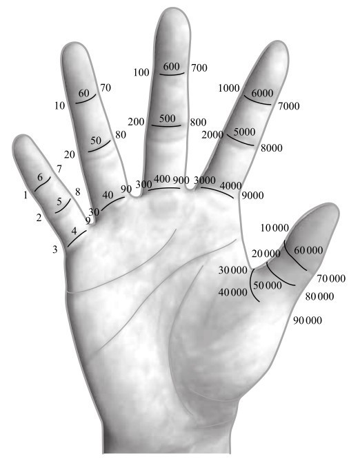
图1-2 在中国的这个手指计数系统中，每根手指上有9个点，代表不同数量级上的数字1到9，因此当另一只手碰到相应的点时，右手就可以表示（105 -1）以内的任何一个数。换一只手，你就能继续表示（1010 -1）以内的数。0不需要手指上的位置来对应，因为当某根手指上没有对应数值时，另一只手只要放开就行
最古怪的计数系统或许来自尤普诺人（Yupno），他们生活在巴布亚新几内亚，每个人都拥有属于自己的短旋律，就像一个名字，或者签名一样。他们还拥有一个计数系统，可以用鼻孔、眼睛、乳头、肚脐和指尖来表示数字，而左睾丸、右睾丸和阴茎分别表示31、32和33。虽然我们可以去思考33在三大宗教中的意义（耶稣去世时33岁，大卫王统治了33年，穆斯林赞主赞圣时所用的手串上有33颗珠子），但这个数字对于尤普诺人的独特之处在于，他们实际上非常不喜欢谈及它。他们会委婉地用“男人的东西”这样的短语来指代数字33。研究人员无法确认该部落中的女性是否使用相同的词语，因为按照该部落的规矩她们不该知道数字系统，并且她们也拒绝回答问题。尤普诺人的数字上限是34，他们称之为“一个死人”。
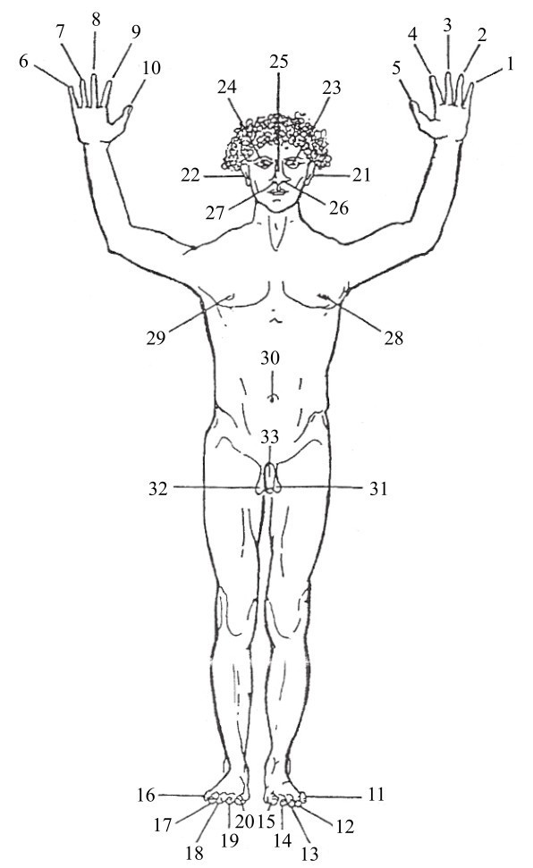
图1-3 一个死掉的尤普诺人
十进制系统在西方已经被使用了数千年。尽管它和我们的身体十分匹配，但许多人认为它并不是最聪明的计数基数。事实上，有些人认为，正是因为它基于身体，它才成了一种错误的选择。瑞典国王查尔斯十二世认为，十进制是“乡下的蠢人”用手指摸索出的产物。他认为，在现代斯堪的纳维亚半岛，人们需要一个“更方便、更有用”的基数。因此，1716年，他命令科学家伊曼纽尔·斯韦登堡（Emanuel Swedenborg）设计了一种以64为基数的新的计数系统。他之所以用了这个令人生畏的数字，是因为64来自4×4×4的立方体。查尔斯曾参加大北方战争，但他属于战败一方，他认为以立方数为基数的计数系统会有利于军事计算，例如测量一盒火药的体积。但伏尔泰写道，他突如其来的灵感“只能证明他是个喜爱非同寻常和困难的人”。六十四进制要求有64个独特的数字（和符号），这是一个极不方便的系统。斯韦登堡把这个系统简化为八进制，并想出了新的符号，其中0、1、2、3、4、5、6和7分别被重新用o、l、s、n、m、t、f和u表示。因此，在这个系统中，l+l=s，而m×m=so。（然而这些新数词相当不可思议。8的幂可被写成lo、loo、looo、loooo和looooo，它们读作，或者说“唱”作，lu、lo、li、le和la。）1718年，在斯韦登堡公布这一系统前不久，国王被一颗子弹射杀，他的八进制梦想也随之消亡。
但查尔斯十二世有一个观点是正确的。我们没有必要仅仅因为十进制是从我们的手指和脚趾的数量派生出来的就非要坚持十进制。例如，假设人类像迪士尼动画里的角色一样，每只手只有三根手指和一根拇指，那么几乎可以肯定的是，我们将生活在一个八进制的世界里：使用8分的评分系统，制作前8名的排行榜，规定8美分等于一角钱。数学不会因为分组方法的改变而改变。好战的瑞典人想寻找最适合我们的科学需要的基数，而不是选择一个适合我们的解剖学特征的基数，在这一点上他们是正确的。
下面这个场景发生在20世纪70年代末的芝加哥，迈克尔·德弗利格（Michael de Vlieger）正在周六的早晨看动画片。里面出现了一个片段，配乐十分令人不安，钢琴和弦跑调了，吉他发出“哇哇”声，夹杂着一个来势汹汹的低音。在满月的星空下出现了一个奇怪的人形。他戴着一顶蓝白条纹的礼帽，穿着燕尾服，有一头金色的头发和一个棒状的鼻子，相当符合那个时代华丽的摇滚时尚。他每只手有6根手指，每只脚上有6根脚趾。“有点儿怪，有点儿吓人。”迈克尔回忆道。这部动画片叫《小十二趾》（Little Twelvetoes），是一个关于十二进制的教育宣传片。“我想大多数美国人都不知道这个动画片在说什么，但我觉得很酷。”
迈克尔现在38岁了。我在他的办公室见到了他，那是密苏里州圣路易斯市一个商店上面的商务套房。他有一头浓密的黑发（里面夹着几缕白发），一张圆脸，深色的眼睛，皮肤有些发黄。他的母亲是菲律宾人，父亲是白人，在儿童时期，混血儿的身份使他成了别人嘲笑的对象。他是一个聪明而敏感的孩子，想象力丰富，他决定发明属于自己的语言，这样他的同学就看不懂他的笔记本了。《小十二趾》的故事则启发了他发明一个十二进制数字系统。
十二进制包含12个数字：除了0到9，还需要另外两个数字代表10和11。这两个“跨十进制”数字的标准写法是χ和Ɛ。所以，在十二进制中从0数到12就是0，1，2，3，4，5，6，7，8，9，χ，Ɛ，10（见图1-4）。
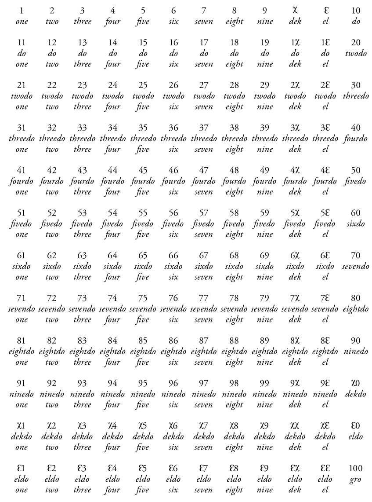
图1-4 十二进制中的1到100
为了避免混淆，新的数字被赋予了新的名称，χ被称为dek，Ɛ叫作el。另外，我们给10取名为do，读成“多”，是“一打”的缩写，以免与十进制中的10混淆。从do开始数，do one代表十二进制的11，do two代表12，do three代表13，twodo是20。
迈克尔用十二进制编制了一个私人日历。在这个日历中，每个日期都是从他出生的那天算起，用十二进制计数。他还在使用这个日历，后来他告诉我，我是在他生命的第80Ɛ9天拜访的他。
迈克尔采用十二进制是出于个人安全考虑，但并非只有他一个人被十二进制的魅力吸引。许多思想家都认为，以12为基数的数字系统更好，因为这个数字比10的用途更广。事实上，十二进制不仅是一个数字系统，它还是一项政治策略。它最早的倡导者之一是约书亚·若尔丹（Joshua Jordaine），他在1687年出版了《十二进制算术》（Duodecimal Arithmetick）。他声称，“没有什么比用12个数字数数更加自然而真实的了”。19世纪的艾萨克·皮特曼（Isaac Pitman）也是著名的“十二进制爱好者”，他最著名的一项贡献就是发明了一种广为流传的速记系统。维多利亚时代的社会理论学家赫伯特·斯宾塞（Herbert Spencer）也推崇十二进制。斯宾塞代表了“劳动人民、低收入者和按需办事的小店主”，倡导对进制的改革。美国发明家兼工程师约翰·W. 尼斯特伦（John W. Nystrom）也是十二进制的追随者。他把十二进制描述为“十二指肠”，但这也许是科学史上最糟糕的双关。
12之所以被认为优于10，是因为它的整除性。12可以被2、3、4和6整除，而10只能被2和5整除。十二进制的支持者认为，在日常生活中，我们更有可能把一个数除以3或4，而不是除以5。以店主为例，如果你有12个苹果，你可以把它们平均分成两袋（每袋6个）、三袋（每袋4个）、四袋（每袋3个），或者六袋（每袋2个）。这要比10个方便得多，因为10只能被分为两袋（每袋5个）或者五袋（每袋2个）。事实上，grocer（杂货商）这个词就暗示了零售商对数字12的偏爱，它来自gross一词，意思是12打，也就是144。12可以被多个数字整除的特性也解释了英制度量衡的实用性，1英尺等于12英寸，它可以被2、3和4整除，这对木匠和裁缝来说是个非常不错的选择。
整除性也与乘法表有关。不管在哪个进制下，乘法表中最容易学习的总是与该基数的除数有关的那部分。因此，在基数为10的情况下，关于2和5的乘法表是最好背的，乘以2的结果都是偶数，而乘以5的结果都是以5或0结尾的数字。同样，在十二进制中，乘法表中最简单的也是与12的除数有关的部分，也就是与2、3、4和6对应的部分（见图1-5）。
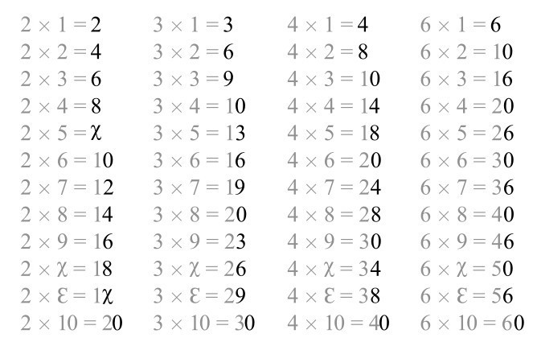
图1-5 十二进制的乘法表
如果看每一列的最后一位数字，你会发现一个惊人的规律。2的倍数都是偶数，3的倍数都是以3、6、9和0结尾的数字，4的倍数是以4、8和0结尾的数字，而6的倍数都是以6或0结尾的数字。换句话说，在十二进制中，我们可以轻易记住乘法表中2、3、4和6的那几列。鉴于许多儿童很难记住乘法表，所以如果我们转换到十二进制，这可能将是一项伟大的人道主义行动。至少一些人是这样认为的。
但我们不应把推行十二进制的倡议与英制单位的追捧者对公制的讨伐混为一谈。喜欢英尺和英寸而不喜欢米和厘米的人，并不在意一英尺应该是12英寸，还是十二进制中的10英寸。但是，从历史上看，推行十二进制的倡议背后其实是一种极端的反法国情绪。这方面一个最好的例子或许是工程师、海军少将G. 埃尔布劳（G. Elbrow）于1913年编撰的一本小册子，他在这本小册子中称法国公制为一种“倒退”。他公布了一份用十二进制编写的英国国王的年代列表。他还注意到，英国在每个十进制的整千年后不久就会遭到入侵：公元43年被罗马人入侵，1066年被诺曼人入侵。他预言：“如果在第三个千年之初，这样的事情再次发生，而这一次两股势力联合在了一起，那会怎么样？”他认为，只要把1913年改写为1135年，也就是换成十二进制，就可以避免法国和意大利的入侵，从而将第三个千年的到来推迟几个世纪。
不过，最著名的十二进制推崇者的宣言是1934年10月作家F.埃默森·安德鲁斯（F. Emerson Andrews）在《大西洋月刊》上发表的一篇文章，这篇文章促成了美国十二进制学会（Duodecimal Society of America，DSA）的成立。（后来它改名为Dozenal Society of America，因为人们认为duodecimal总是让人想起他们打算取而代之的十进制 [2] 。）安德鲁斯表示，采用十进制是“不可原谅的短视”，也许放弃它也算不上“做出巨大的牺牲”。DSA最初要求加入的成员要通过十二进制算术的4项测试，然而这一要求很快被取消。延续至今的《十二进制公报》（Duodecimal Bulletin）已成为一本优秀的出版物，也是医学文献之外唯一包含涉及六指畸形（出生时带有6根手指）的文章的出版物。（六指畸形或许比你想象的要普遍。大约每500人中就有一人出生时多了至少一根手指或脚趾。）1959年，它的姐妹组织——英国十二进制学会成立；一年后，首届国际十二进制会议在法国举行，但这也是最后一届。尽管如此，这两个学会仍在为十二进制的未来而战，这些被压迫的激进分子团结起来去反抗“十进制的暴政”。
现任DSA主席迈克尔·德弗利格从年轻时起就对十二进制十分迷恋，他并非一时兴起。事实上，他对这个系统感情如此之深，甚至在他作为数字建筑模型设计师的本职工作中也使用它。
虽然十二进制确实让乘法表变得更容易学，但它最大的优势其实是减少分数的出现。当你做除法的时候，十进制里的数通常会得到很乱的结果。例如，10的三分之一是3.33…，3无限循环下去。10的四分之一是2.5，它需要小数点。然而，在十二进制中，10的三分之一是4，10的四分之一是3，非常完美。如果以百分比表示，三分之一是40%，四分之一是30%。（当然，准确的说法不是“百分之”，现在应该是“144分之”。）事实上，如果你观察100除以数字1到12的结果，你就会发现十二进制中的数字更为简洁（见表1-1，注意，右栏中的分号代表十二进制的小数点）。
表1-1 十进制和十二进制中100的分数
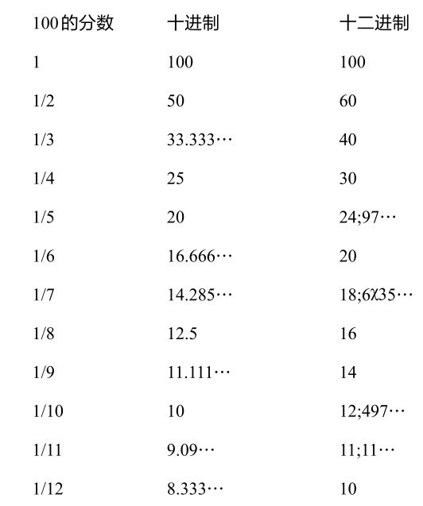
正是这种精度的提高，使得十二进制更符合迈克尔的需要。尽管他的客户提供的尺寸是十进制的，但他还是喜欢把它们转换成十二进制。他说：“这让我在划分数字时有了更多选择。”
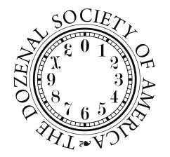
图1-6 美国十二进制学会会徽
“避免使用（凌乱的）分数能保证一切都正好。有时，由于时间限制或者最后一刻的变更，我需要在一个不符合最初设置的网格中迅速进行大量修改。因此，获得简单的比率很重要。十二进制提供了更多、更明确的选择，而且速度也更快。”迈克尔甚至认为，磨刀不误砍柴工，使用十二进制会让他在工作中更有优势。
DSA曾经希望用十二进制取代十进制，而其“原教旨主义”的分支现在仍然如此，但是迈克尔并没有那样的雄心壮志。他只想向人们展示十进制之外的另一种选择，或许这个选择更适合他们的需要。他知道，让整个世界为了12而放弃10的概率几乎为零。这样的改变既会带来混乱，又代价巨大。十进制对大多数人来说已经足够了，尤其在计算机时代，对人们心算技能的要求总体来说更低了。“我觉得12是日常生活中普通计算的最佳基数。”他补充道，“但我并不想改变任何人。”
DSA的一个直接目标是将χ和Ɛ纳入统一字符标准（Unicode），统一字符标准是大多数计算机使用的文本字符集合。事实上，十二进制学会内部有一个主要争论主题就是符号的使用。DSA标准的χ和Ɛ是20世纪40年代由威廉·艾迪生·德威金斯（William Addison Dwiggins）设计的，他是美国最著名的字体设计师之一，也创造了喀里多尼亚（Caledonia）和伊莱克特拉（Electra）等字体。艾萨克·皮特曼更喜欢使用τ和Ɛ。法国的十二进制爱好者让·埃西（Jean Essig）更喜欢使用 和τ。一些讲求实际的会员倾向于用*和#，因为它们已经存在于电话上的按键之中了。数词也是个问题。《十二进制手册》（于1960年编写，也就是十二进制的1174年）推荐使用dek、el和do（gro表示100，mo表示1000，do-mo、gro-mo、bi-mo和tri-mo分别表示do的更高次幂）。另一个方法是保留ten（10）、eleven（11）和twelve（12），然后继续使用twel-one、twel-two等。这主要是出于对术语的敏感性，DSA小心翼翼地不推广任何系统，不把任何符号或术语的推崇者边缘化。
迈克尔对不同寻常的基数的热爱并没有止步于12。他尝试过八进制，在家里自己做手工的时候就会用到。“我把基数当作工具。”他说。他已经试到六十进制了。为此，他必须在我们已有的10个数字之外，再设计50个额外的符号。这个目的显然不切实际，他形容用六十进制工作就像爬一座高山一样。“我还不能住在上面。六十进制用到的数字太多了。十进制就像一座山谷，在那里我可以呼吸。但我可以去山上看看那里的风景是什么样子。”他写下了一张六十进制的因数表，并惊奇地看着它所揭示的规律。“那里绝对藏着一个美人。”他对我说。
六十进制似乎是一个想象力特别丰富的产物，但它其实有一段历史渊源。它实际上是我们已知的最古老的基数系统。
最简单的计数形式是记录法，世界各地的人们以不同形式使用这种方法计数。印加人通过在绳子上打结来计数，而穴居人则在岩石上画出标记。木制家具的床柱上有了刻痕（至少是象征意义上的）。最早发现的“数学手工艺品”据说是一根计数棒：人们在斯威士兰一座洞穴中发现了一根35000年前的狒狒腓骨。这根骨头被称为“莱邦博骨”，上面有29条刮痕，可能代表着一个月相周期。
正如我们在前一章中看到的，人类可以立即分辨出1和2、2和3之间的区别，但超过4就变得困难了。刻痕也是如此。所有方便的数字记录系统都需要把数字分组。在英国，人们习惯用4根竖线当作记号，然后沿对角线画上第5根线，与前4根相交，这就是所谓的“五杆栅栏门”。南美洲的人会用4根线画一个正方形，然后给正方形画上一条对角线作为第5根线。中国人、日本人和韩国人会使用一种更复杂的方法，也就是画“正”字。（下次你吃寿司的时候，可以问问服务员，他是如何计算你吃了几盘的。）
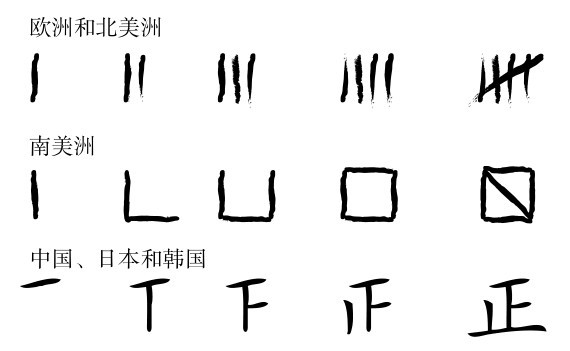
图1-7 世界各地的数字记录系统
大约在公元前8000年，出现了使用带标记的小陶片来代表物体的做法。这些代用币主要被用来记录交易的羊等物品的数量。不同陶片可以表示不同的物体或者物体数目。从那一刻起，人们可以在没有羊的情况下计算羊的数量，这让交易和牲畜饲养变得更加容易。这也标志着我们现在所理解的数字的诞生。
在公元前4000年的苏美尔（现位于伊拉克），这个代用币系统演变成了一个文字系统，通过把尖芦苇压进软黏土中的方式书写。起初，人们用圆或指甲形状表示数字。到了大约公元前2700年，用于书写的笔有了扁平的边缘，写出来的印记看起来很像鸟的脚印，人们用不同的印记表示不同的数字（见表1-2）。楔形文字标志着西方书写系统的漫长历史的开端。想想看，文学是美索不达米亚会计师发明的数字符号的副产品，这听起来是不是有些讽刺？
表1-2 古代苏美尔数字和楔形文字数字
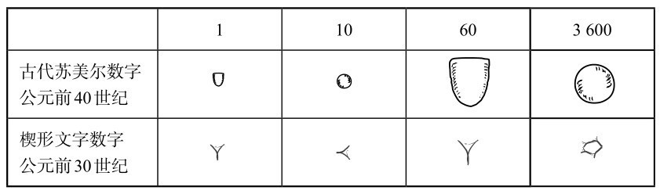
楔形文字中只包含代表1、10、60和3600的符号，也就是说，这个系统既包含六十进制也包含十进制，因为楔形数字中的基数集可以转换为1、10、60和60×60。苏美尔人为何将他们的数字分为60个一组，被认为是算术史上最大的未解之谜之一。一些人认为，这是五进制和十二进制两个系统融合的结果，但还没确凿的证据来支持这种说法。
古巴比伦人在数学和天文学上取得了巨大的进步，他们接受了苏美尔人的六十进制，而后是古埃及人，接着是古希腊人，也都沿用了古巴比伦人计算时间的方式。正因如此，今天的每分钟有60秒，而每小时有60分钟。我们习惯以六十进制来计算时间，而从未对此产生怀疑，即使它没有任何解释。然而，法国大革命时期的革命者想解决时间系统与十进制系统不一致的问题。在1793年的全国大会上，当局引入了公制度量衡，试图将时间变为十进制。法国当局还颁布过一项法令，将每天分为10个小时，每小时有100分钟，每分钟有100秒。这是一个简洁的解决办法，它把一天的时间变成了100000秒，而非原来的86400（60×60×24）秒。因此，改革后的一秒比正常的一秒短了一点儿。1794年，十进制时间成了强制性的计时系统，那时生产的手表都只带有10个数字。但这种新的系统完全把民众搞晕了，在短短6个多月后它就被放弃了。100分钟一小时也不如60分钟一小时方便，因为100的除数没有60多。100只能被2、4、5、10、20、25和50整除，但是60可以被2、3、4、5、6、10、12、15、20和30整除。十进制时间的失败是十二进制取得的小小的胜利。12不仅可以整除60，它还可以整除24，而24就是一天中的小时数。
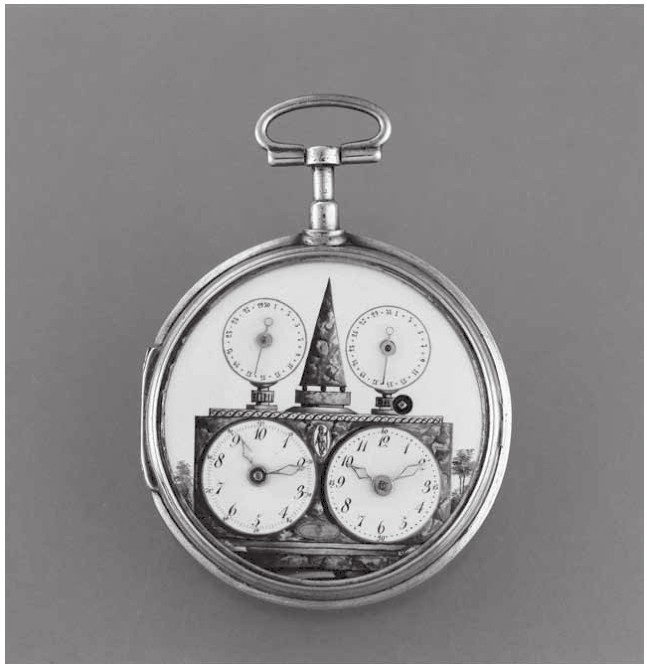
图1-8 同时带有改革后的十进制表盘和传统表盘的手表
更近的一次推行十进制时间的运动也失败了。1998年，瑞士的斯沃琪集团提出了斯沃琪互联网时间，将一天分成1000份，一份被称为一“拍”（相当于1分26.4秒）。这款展现出了“革命性的时间观”的手表销售了大约一年的时间，随后，制造商难为情地将它从商品目录中删掉了。
然而，法国和瑞士并不是仅有的在不远的过去采用过古怪计数程序的国家。当苏美尔人刻出了第一片楔形文字时，计数棒就已经过时了，但计数棒一直被英国当作一种货币形式，使用到1826年。英国中央银行曾发行过一些改装过的计数棒，这种计数棒根据标记距底部的距离来代表货币价值。1186年，财政大臣理查德·菲茨内尔（Richard Fitzneal）撰写了一份文件，其中规定：
£1000 手掌的厚度
£100 拇指的宽度
£20 小指的宽度
£1 膨胀后的大麦的宽度
财政部采用的程序其实是一种“双重计数”系统。将一块木头从中间劈开，分成两部分，分别被称为符木（stock）和衬木（foil）。符木和衬木上各标了一个数值，衬木就像一张收据。如果我借给英国中央银行一些钱，我就会得到一块符木，上面有一个刻痕，标明了金额，而银行则保留了一个与之吻合的衬木。股东（stockholder）和股票经纪人（stockbroker）这两个英文单词就是由此而来。
这种做法直到两个世纪前才被废除。1834年，财政部决定在英国政府所在地威斯敏斯特宫的火炉中焚烧这些废弃的木头，但火势失控了。查尔斯·狄更斯写道：“炉子里堆满了这些荒谬的木棍，镶板被烧着了，镶板把下议院烧了，（政府的）两院都化为灰烬。”晦涩难懂的金融工具常常影响政府的工作，但只有计数棒让议会垮了台。重建后的威斯敏斯特宫包含一座崭新的钟楼，被称为大本钟，它很快成了伦敦最著名的地标。
支持英制而非公制的理由之一是，英制单位的词念起来更好听。能证明这一点的一个绝佳的例子就是葡萄酒的计量方法：
2吉耳 [3] =1肖邦
2肖邦=1品脱
2品脱=1夸脱
2夸脱=1半加仑
2半加仑=1加仑
2加仑=1配克
2配克=1半蒲式耳
2半蒲式耳=1蒲式耳[或小木桶（firkin）]
2蒲式耳=1小桶（kilderkin）
2小桶=1桶（barrel）
2桶=1大桶（hogshead）
2大桶=1派普（pipe）
2派普=1大啤酒桶（tun）
这个系统以2为基数，也叫二进制，二进制数通常用数字0和1来表示。二进制只会用到十进制数字里的0和1。换句话说，它的数列是0，1，10，11，100，101，110，111，1000这样排列的。所以，10是2，100是4，1000是8，末尾每加一个0，就表示数字乘以2。（就像在十进制里，数字的末尾加一个0相当于乘以10。）在葡萄酒的计量中，最小的单位是吉耳。2吉耳等于1肖邦，4吉耳是1品脱，8吉耳是1夸脱，16吉耳是1半加仑，等等。这种计量方法完美地符合二进制。如果用1表示1吉耳，那么1肖邦是10，1品脱是100，一夸脱是1000，一大啤酒桶就是10000000000000。
二进制的支持者甚至包括一些伟大的数学家。戈特弗里德·莱布尼茨是17世纪末最重要的思想家之一，也是一位科学家、哲学家和政治家，他对这个非标准的进制情有独钟。他还担任汉诺威布伦瑞克公爵宫廷的图书管理员。因为对二进制非常感兴趣，他曾写信给公爵，敦促他铸造一枚刻有Imago Creationis（意为“世界的形象”）字样的银质徽章来向二进制致敬。对莱布尼茨来说，二进制既有现实意义，也有精神意义。首先，他认为，二进制能用2的幂来描述每个数字，这给处理很多事情带来了便捷。他在1703年写道：“它使得化验师只用少数几种砝码就可以称量各种重量，铸币时也可以使用更少种类的货币就能提供更多的面值组合。”但莱布尼茨也承认，二进制也有一些实际的缺点。用它写出来的数字更长，例如，十进制的1000用二进制写就是1111101000。但他补充道：“作为一种补偿，（二进制）对科学来说更为基本，并能提供新的发现。”他认为，通过观察二进制计数法中的对称性和规律，可以发现新的数学见解，数论因此会变得更为丰富，也能够承载更多功能。
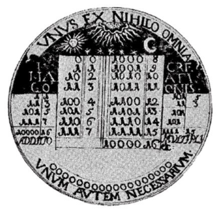
图1-9 莱布尼茨设计的二进制徽章。除印有“世界的形象”之外，还刻有拉丁文：“从无到一，再到一切，一总是不可或缺的。”
其次，莱布尼茨发现二进制竟然与他的宗教观点一致。他认为宇宙是由存在（物质）和非存在（虚无）组成的，而数字1和0完美地象征着二元性。就像上帝从虚空中创造万物一样，所有的数字都可以用1和0来书写。莱布尼茨坚信，二进制代表了一个形而上的基本真理，而令他非常高兴的是，他晚年看到了《易经》这本中国古代的神秘著作，这本书更坚定了他的这种信念。《易经》是一本占卜书，它包含了64种不同的符号，每种符号都有一个对应的解释。读者（传统上是通过掷出蓍草棒）随机地选择一个符号，并解读相关的文本，有点儿像解读一张占卜图。《易经》中的符号都由6条线组成。这些线有的是断开的，有的没有断，分别对应阴和阳。《易经》中的64个六线形每6个一组，加在一起就是阴和阳的全套组合。
图1-10展示了一种特别简洁的排列六线形的方法。如果每个“阳”记作0，每个“阴”记作1，那么这个序列就能精确地匹配从0到63的二进制数字。
这种排序方式被称为伏羲序列。（严格地说，这是倒过来的伏羲序列，但它们在数学上是等价的。）当莱布尼茨意识到伏羲序列的二进制本质时，他对《易经》的深刻性有了极高评价。他认为二元系统反映出了“造物”，而他发现，这也是道教智慧的基础，这意味着，东方神秘主义与他的西方信仰是可以相融合的。“中国古代神学具有完备的体系，如果排除其他错误，它能揭示基督教的伟大真理。”他写道。
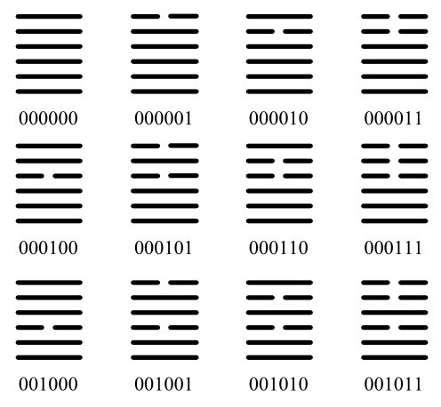
图1-10 《易经》中的部分伏羲序列及其对应的二进制数字
对他那个时代杰出的博学家来说，莱布尼茨对二进制的肯定是一个相当奇特的预言。但考虑到如今这一系统的重要性，他或许比自己以为的还要有先见之明。数字时代是以二进制为基础的，因为计算机技术在最根本的层面上依赖一种由0和1组成的语言。“唉！”数学家托比亚斯·丹齐格（Tobias Dantzig）写道，“曾经的一神论墓碑，最终来到了机器人的肚子里。”
“所谓自由，就是可以说二加二等于四。”乔治·奥威尔的小说《一九八四》的主人公温斯顿·史密斯如此说道。这里奥威尔除了指言论自由，也指数学。二加二等于四，没有人能告诉你它是错的。数学的真理不会受文化或意识形态的影响。
但另一方面，我们认识数学的方法又深受文化的影响。例如，选择十进制并不是出于数学上的原因，而是出于生理上的原因，也就是我们手指和脚趾的数量。语言同样以惊人的方式塑造了我们对数学的理解。例如，在西方，我们都受到了表达数字的词语的束缚。
在几乎所有西欧语言中，数词都不遵循一种规律的模式。在英语中，表示21的数词由20和1组合而成，22、23同理，但11、12、13却用专门的词来表示。表示11、12的两个词在英文中有独特的结构，但表示13的词（thirteen）是3和10的组合，而3在10之前，不像在23（twenty-three）里，3是在20之后。在10到20之间，英语的数词毫无规律可言。
然而，在中文、日语和韩语中，数词确实遵循一种规律。十一就是十和一，十二是十和二，以此类推，十三，十四，一直到十九。二十是二和十，二十一是二十和一。在任何情况下，数字怎么写就怎么读。这会有什么影响呢？其实，在年纪比较小的时候，这确实会造成一些差异。很多实验表明，亚洲孩子学数数比欧洲孩子更容易。一项针对中国和美国的四五岁儿童的研究表明，这两个国家的儿童在学习数到12时的表现相似，但对学习更大的数字来说，中国孩子比美国孩子提前了大约一年。有规律的计数系统也使算术更容易理解。一个简单的加法，比如25加32，一旦被表示为“二十五加三十二”，就很容易得到“五十七”的答案。
并非所有的欧洲语言都是没有规律的。例如，威尔士语的数词就和中文的很像。威尔士语中的11是un deg un（一十一），12是un deg dau（一十二），等等。牛津大学的安·道克（Ann Dowker）和德利思·劳埃德（Delyth Lloyd）测试了说威尔士语和说英语的儿童的数学能力，这些孩子都来自同一个威尔士村庄。亚洲儿童的表现比美国儿童好，可能是因为许多文化因素，例如花在练习上的时间或者对数学的态度，但如果所有儿童都来自同一个地方，文化因素就可以被排除。道克和劳埃德的结论是，虽然说威尔士语的儿童和说英语的儿童在算术方面的表现大致相同，但说威尔士语的儿童确实在特定领域表现出了更好的数学技能，例如阅读、比较和使用两位数。
德语甚至比英语更没有规律。在德语中，21是einundzwanzig，字面意思是“1和20”，22就是“2和20”，这种个位在十位数之前的计数一直持续到99。这意味着，当一个德国人说一个大于100的数字时，这些数字不是按顺序读出来的，345是，“300-5-40”，它以杂乱无章的“3-5-4”的形式列出了数字。一些德国人对此很担忧，认为这让数字变得更加混乱，因此他们成立了一个“20-1运动组织”，希望将德语的计数系统转变为更为规律的体系。
让说西欧语言的人相比于一些说亚洲语言的人在数学上处于劣势的，不仅仅是数词的位置，或者11到19的不规律形式。说西欧语言的人还因为说一个数字要花更多的时间而受到阻碍。在《数字感觉》中，斯坦尼斯拉斯·德阿纳写下了4、8、5、3、9、7、6这串数列，让我们花20秒记住。说英语的人有50%的概率能正确记住这7个数字。相比之下，说中文的人可以以同样的准确率记住9个数字。德阿纳认为，这是因为我们在任何一个时间内记住的数字的数量，是由我们在两秒内可以说出多少数字来决定的。中文中的1到9都由简练的单音节组成：一、二、三、四、五、六、七、八、九。每个数字的发音时间不到1/4秒，因此在两秒钟的时间内，一个说中文的人可以说出9个数字。相比之下，说一个英语数词需要至少1/3秒（由于烦琐的双音节“seven”，以及有长音的音节“three”），所以说英语的人在两秒钟内最多只能说出7个数字。不过，最高纪录来自广东话，广东话的数字发音更为简洁。说广东话的人能在两秒钟内记住10个数字。
西方语言似乎降低了数学的易懂程度，而日语起到的作用却正相反。日语的单词和短语会出现一些变化，让乘法表（日语中被称为kuku，即九九表）变得更容易学习。九九表的传统起源于中国古代，大约在8世纪传到日本。Ku是日语中的9，之所以叫“九九表”，是因为过去的乘法表是从最末尾开始的，也就是“九九八十一”。大约400年前，人们才将这一传统更正，所以九九表现在从“一一得一”开始。
九九表的语言很简单：
一一得一
一二得二
一三得三……
直到“一九得九”，然后二的乘法开始于：
二一得二
二二得四
直到“九九八十一”。
到目前为止，这似乎与英国人背诵乘法表的朴素风格非常相似。然而，在日本九九表中，每当一个数字有两种发音方式时，日本人都会选用更流畅的那种方式。例如，1可以是in或ichi，他们在九九表的开头使用的并不是in in或ichi ichi，而是更加响亮的in ichi组合。8是ha，“八八”应该是ha ha。然而，九九表中的8×8却是happa，因为这个发音更快。结果就是，九九表读起来更像一首诗或童谣。我曾参观东京的一所小学，看到一个班七八岁的学生在练习九九表时，我惊讶地发现它听起来很像饶舌歌曲，节奏明快，朗朗上口。这显然与我在学校里背诵的乘法表一点儿都不一样，我在学校背诵乘法表时使用的节奏，就像一列正在爬山的蒸汽火车发出的声音。近藤真纪子（Makiko Kondo，音译）老师说，她会用一种很快的节奏教学生们九九表，因为这样学习很有趣。“我们先让他们背下来，过一段时间他们才会明白它真正的意思。”九九表这首诗似乎把乘法表嵌入了日本人的大脑。一些成年人告诉我，他们知道7乘以7等于49，并不是因为他们算术很好，而是因为“七七四十九”的韵律听起来十分好记。
西方语言的数词没什么规律，这对于算术者的初学者来说可能有些不幸，但它们对数学史学者来说却极为有趣。法语中的80是quatre-vingts，意思是“4个20”，这表明法国人的祖先曾经使用过二十进制。在许多印欧语言中，“9”和“新”这两个词是一样的或者非常相似，比如法语（neuf，neuf）、西班牙语（nueve，nuevo）、德语（neun，neu）和挪威语（ni，ny），因为这是一个早已被遗忘的八进制系统遗留下的产物。在八进制中，第9个是新的“8个一组”中的第一个。（如果不算拇指，我们共有8根手指，这可能是这种进制诞生的原因，或者它也可能是通过数手指之间的间隙发展而来的。）数词也在提醒我们，我们与亚马孙和澳大利亚那些没有数字的部落有多么相近。在英语中，thrice可以同时表示三次和多次；在法语中，trois是三，而tres是非常。也许，这标志着，在遥远的过去，我们的数字模式也是“一，二，多”。
尽管数字的某些方面（比如基数、数字的写法或者所用词语的形式）在不同文化中千差万别，但早期文明的计数和计算机制却惊人地统一。他们使用的一般方法被称为位值，也就是使用不同的位置来表示不同的数量级。我们可以想一下，这对中世纪林肯郡的牧羊人意味着什么。我之前提到，他们有20个数字，从yan数到figgit。牧羊人每数20只羊，就把一块鹅卵石放在一边，再开始从yan数到figgit。如果他有400只羊，最后就会有20块鹅卵石，因为20×20=400。现在想象一下牧羊人有1000只羊。如果他把所有羊都数完，就会有50块鹅卵石，因为50×20=1000。然而，50块鹅卵石带来的问题是，他是没有办法数出这些鹅卵石的，因为他不会数20以上的数字！
为了解决这个问题，他们在地面上画出平行的犁沟，如图1-11所示。牧羊人数完20只羊后，就在第一道犁沟里放一块鹅卵石。当他再数完20只羊后，他就在第一道沟里又放一块鹅卵石。慢慢地，第一道犁沟里铺满了鹅卵石。然而，当犁沟里装满20块石头后，他就在第二道犁沟里放一块石头，并且把第一道沟里的所有石头都清理干净。换言之，第二道沟中的一块鹅卵石等于第一道沟中的20块鹅卵石，就像第一道沟中的一块鹅卵石等于20只羊一样。第二道沟中的一块鹅卵石代表400只羊。当一个牧羊人有1000只羊时，他的第二道犁沟里会有两块鹅卵石，第一道犁沟里会有10块鹅卵石。通过使用这样的位值系统（赋予每道犁沟中的鹅卵石不同的值），他只用12块鹅卵石就可以数出1000只羊，而不用原先所需的50块鹅卵石了。
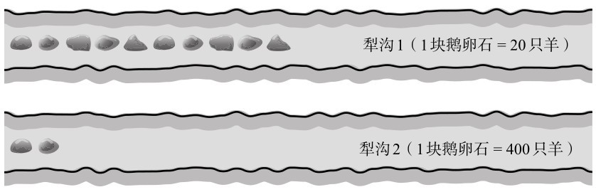
图1-11 羊的总数=（10×20）+（2×400）=1000（只）
位值计数系统已经遍及世界各地。印加人用盘子里的豆子或玉米粒替代犁沟里的鹅卵石；北美的印第安人会把珍珠或贝壳串在不同颜色的绳子上；古希腊人和古罗马人在桌子上摆着用骨头、象牙或金属制成的计数器；古印度人在沙子上做标记。
古罗马人还制造了一种机械计数器，槽中的珠子可以自由滑动，也就是算盘。这些便携的计数器在文明世界传播开了，尽管不同的国家使用了不同的版本。俄罗斯的算盘“肖蒂”（schoty）每根杆上有10颗珠子（只有一排有4颗珠子，收银员用它来表示1/4卢布）。中国的算盘有7颗珠子，而日式算盘和罗马算盘一样，只有5颗珠子。
日本每年约有100万儿童学习算盘，课外算盘俱乐部共有两万家之多。在东京的一天晚上，我拜访了东京西郊的一家算盘俱乐部。它距离当地的一条火车线路很近，就在一片居民区的拐角。外面停着30辆色彩鲜艳的自行车。一面大橱窗里陈列着奖杯、算盘和一排木条，木条上用毛笔写着明星小学生的名字。
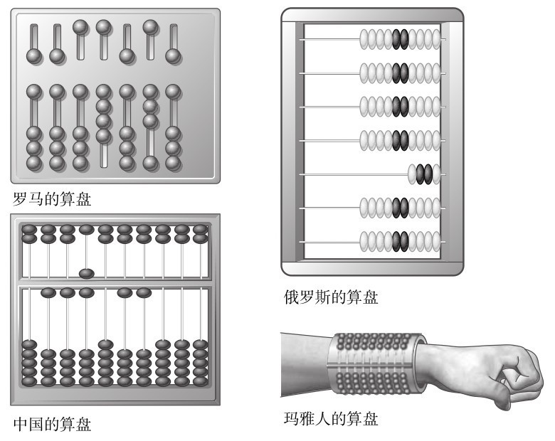
图1-12 不同地区的算盘
日语中的阅读、写作和算术分别念作yomi、kaki、soroban，也就是读、写和算盘。“读写算”这个短语可以追溯到17世纪到19世纪的历史时期，当时日本几乎完全与世界隔绝。一个新兴的商人阶层出现了，他们除了熟练掌握武士刀之外，还需要掌握其他技能。因此，一种教授语言和算术的私立社区学校应运而生，在这里算术就以珠算训练为主。
宫本裕司（Yuji Miyamoto，音译）的算盘俱乐部是这些古老的算盘机构的一种现代传承。当我走进俱乐部时，穿着深蓝色西装和白色衬衫的宫本站在一间小教室前，教室里有5位女孩和9位男孩。宫本以赛马解说员的节奏用日语朗读出数字。孩子们把数字加在一起，手中珠子的撞击声听起来就像一群蝉在鸣叫。
在日式算盘中，每列珠子可能的位置正好有10种，表示0到9这10个数字，如图1-13所示。
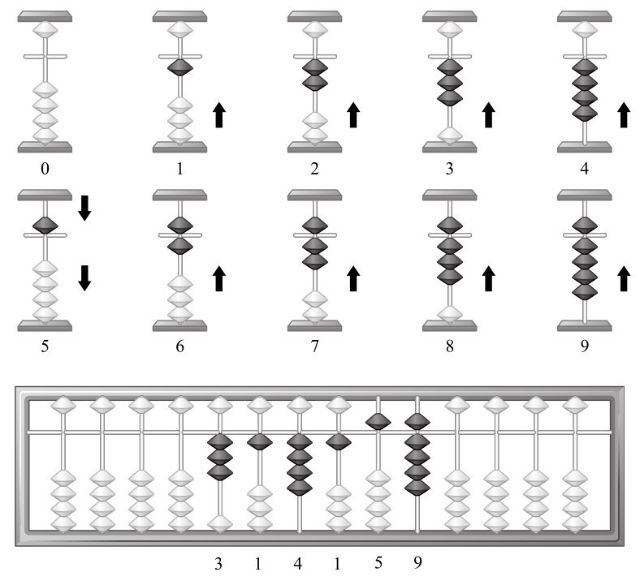
图1-13 日式算盘上的数字
当你在日式算盘上拨出一个数字时，这个数字的每一位数都表现为这10种位置中的一种，只是列不同。
算盘最初被发明是作为一种计数方法，但它确实也成了一种计算方法。有了可以轻轻拨动的珠子，算术变得容易多了。例如，如果计算3加1，你从3颗珠子开始，再移动1颗珠子，答案就出现在你的眼前——4颗珠子。再例如，要计算31加45，先用两列珠子分别表示3和1，再在左列上加4个珠子，在右列上加5个珠子。现在，这两列分别是7和6，答案就是76。如果熟加练习和应用，那么只要有足够多的列可以容纳数字，就很容易对任何长度的数字做加法运算。如果某一列上的两个数字加起来超过10，你就需要向左边一列进位。例如，有一列上出现了9加2，就要在左边列上加1，原始列上则变成1，表示答案11。减法、乘法和除法的运算稍微复杂一点儿，但一旦掌握技巧，就可以非常迅速地完成计算。
在20世纪80年代廉价的计算器问世之前，在从莫斯科到东京的商店柜台前，算盘都十分普遍。事实上，在手动时代向电子时代过渡的时期，日本市场出现了一种将计算器和算盘结合起来的产品。通常，用算盘计算加法更快，因为你输入数字后马上就能得到答案。对于乘法，电子计算器则会获得一些速度优势。（对于那些对电子产品持怀疑态度的算盘使用者来说，算盘也是用来检查计算器结果的一种方式，以免他们不相信。）
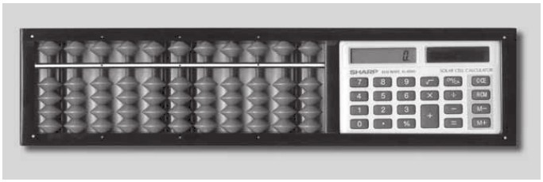
图1-14 夏普的算盘计算器
20世纪70年代，巅峰时期的日本每年有320万学生参加全国算盘水平考试，但自那之后，日本的算盘使用率持续下降。不过，算盘仍旧是孩子成长过程中的一个重要方面，就像游泳、小提琴或柔道一样，它是一项主要的课外活动。事实上，珠算训练就像武术一样。它的能力水平是用段位来衡量的，竞赛分为地方、省级和国家级等不同层级。有个周日，我去参观一个地方级的活动。近300名5到12岁的儿童坐在会议厅的桌子前，桌上摆着一系列日式算盘的配件，比如豪华的算盘包。一个播音员站在大厅前面，用不耐烦的宣礼语调说出要加、减或乘的数字。这是一场持续数小时的淘汰赛。最后，胜利者会被颁发奖杯，每个奖杯上都有一个高举算盘的长着翅膀的人像，背景音乐则是军乐铜管乐队的合奏。
在宫本的学校，他向我介绍了他最好的学生之一。19岁的古山直树（Naoki Furuyama，音译）是前全国算盘冠军。他穿着随意，黑色T恤衫外套着一件浅色格子衬衫，看上去是一个活泼而从容的青年，与刻板印象中不擅交际的怪才形象大相径庭。古山可以在大约4秒钟内算出两个6位数相乘的结果，4秒大约就是说出问题所需的时间。我问他能计算这么快有什么意义，因为在日常生活中或许并不需要这样的技能。他回答说这有助于他集中精力和自律。这时，站在我们身边的宫本打断了我们。他问我，跑26英里 [4] 有什么意义？或许从来没有跑26英里的必要，但人们这样做是为了突破人类的极限。他还说，同样，训练一个人的算术头脑也会带来一种高贵的品格。
一些家长之所以把孩子送到算盘俱乐部，是因为它有助于提高孩子在学校里的数学成绩。但这并不能完全解释算盘的受欢迎程度。有其他的课外俱乐部能提供更有针对性的数学教学。例如，“公文式”是一种通过做练习题提高计算能力的方法，它始于20世纪50年代初的大阪，现在全世界有超过400万的孩子在用这个系统学习。算盘俱乐部很有趣，我从宫本学校里学生的脸上看到了这一点。很明显，他们很享受自己快速准确地拨珠子的那种感觉。日本的传统算盘赋予了他们民族自豪感，然而，我认为算盘的真正乐趣更为原始：它已经被使用了几千年，在某些情况下，算盘仍然是做算术的最快方法。
在使用了几年算盘之后，当你对珠子的位置已十分熟悉时，你只需要在头脑中想象算盘就可以进行计算。这叫心算，宫本学校里的尖子生都学过。心算的场景看起来十分令人惊叹——尽管你“看”不到什么。宫本在一个安静的教室里朗读数字，几秒钟内，学生们就会举起手来回答问题。古山直树告诉我，他把算盘想象成8列。换句话说，他想象的算盘可以显示从0到99999999的每个数字。
如果用学生的段位和他们在全国锦标赛中拿到的成绩来衡量，宫本的算盘俱乐部算是全国顶尖的俱乐部之一。不过，学校的专长其实是心算。几年前，宫本决定推出一种算术比赛，只可能用心算来回答问题。例如，当你给一位学生念出一道加法计算题时，他可以用很多不同的方式来回答，他可以用计算器、纸笔、算盘或心算。宫本想表明，在某些情况下，心算是唯一的方法。
他最后设计出了一种名为“飞速心算”（Flash Anzan）的电脑游戏，他给我演示了一下。他让全班同学做好准备，按下开始键，学生们盯着教室前面的电视屏幕。机器发出三声哔哔声，表示它即将开始，然后出现以下15个数字，一次一个。每一个数字只显示0.2秒，所以整个过程在3秒内就结束了：
164
597
320
872
913
450
568
370
619
482
749
123
310
809
561
这些数字飞快地闪过，我几乎没有时间记下它们。然而，随着最后一个数字一闪而过，古山直树笑着说，数字的总和是7907。
用计算器或算盘是不可能完成“飞速心算”挑战的，因为根本没有时间记下闪现在你面前的数字，更不用说把它们输入机器或者排列在算盘上了。心算并不要求你记住数字。你所做的就是，每当你看到一个新的数字时，就把你脑子里的珠子拨动一下。从0开始，看到164时就立即想象出算盘上的164。当你看到597时，脑中的算盘重新排列成它们的和，也就是761。在15次加法后，你或许记不住出现的任何数字，或中间算出的和，但你脑海中的算盘会给出答案——7907。
“飞速心算”很快成为一种全国潮流，任天堂游戏公司甚至发布了一款适配于其双屏便携游戏机（NDS）的“飞速心算”游戏。宫本给我看了一些“飞速心算”电视比赛节目的片段，在节目中，十几岁的心算明星在尖叫着的支持者面前奋力拼搏。宫本说，他的游戏帮助日本各地的算盘俱乐部招收到了许多新的学生。“之前人们没有意识到算盘的技巧有什么用，”他说，“但有了这么多报道，现在他们意识到了。”
神经成像扫描显示，算盘或心算激活的大脑部分与普通的算术计算和语言所激活的部分并不同。传统的“纸笔”算法依赖与语言处理相关的神经网络，而算盘依赖与视觉空间信息相关的网络。宫本将其简化为“算盘用右脑，普通数学用左脑”。还没有足够的科学研究能告诉我们这种区隔带来的好处，或者它与一般智力、专注力或其他技能的关系。然而，这确实解释了一个惊人的现象，那就是，算盘专家能够以最不可思议的方式进行多任务工作。
宫本的妻子曾是一位全国算盘冠军，他们在年轻时经常去同一家算盘俱乐部，并在那里认识了彼此。他们的女儿里花子（Rikako，音译）也是个算盘天才（如果她不是那就太可惜了）。她在8岁的时候就达到了顶级段位，每100000人中只有一人能达到这样的水平。9岁的里花子正在上课，她穿着淡蓝色的上衣，刘海垂到眼镜边。她看上去非常警觉，在专注的时候会噘起嘴唇。
Shiritori（词语接龙）是一种日语单词游戏，从说Shiritori开始，然后每个人都必须说一个以前一个单词的最后一个音节开始的单词。所以，第二个词可能是ringo（苹果），因为它以“ri”开头。宫本让里花子和旁边的女孩在玩“飞速心算”游戏的同时玩词语接龙，30个三位数将在20秒内依次被显示出来。开场音乐响起来了，女孩们的对话开始了：
Ringo（苹果）
Gorira（大猩猩）
Rappa（喇叭）
Panda（大熊猫）
Dachou（鸵鸟）
Ushi（奶牛）
Shika（鹿）
Karasu（乌鸦）
Suzume（麻雀）
Medaka（鳉鱼）
Kame（龟）
Medama yaki（煎蛋）
20秒过去了，里花子回答说：“17602。”她能够在玩词语接龙游戏的同时，完成30个数的加法。
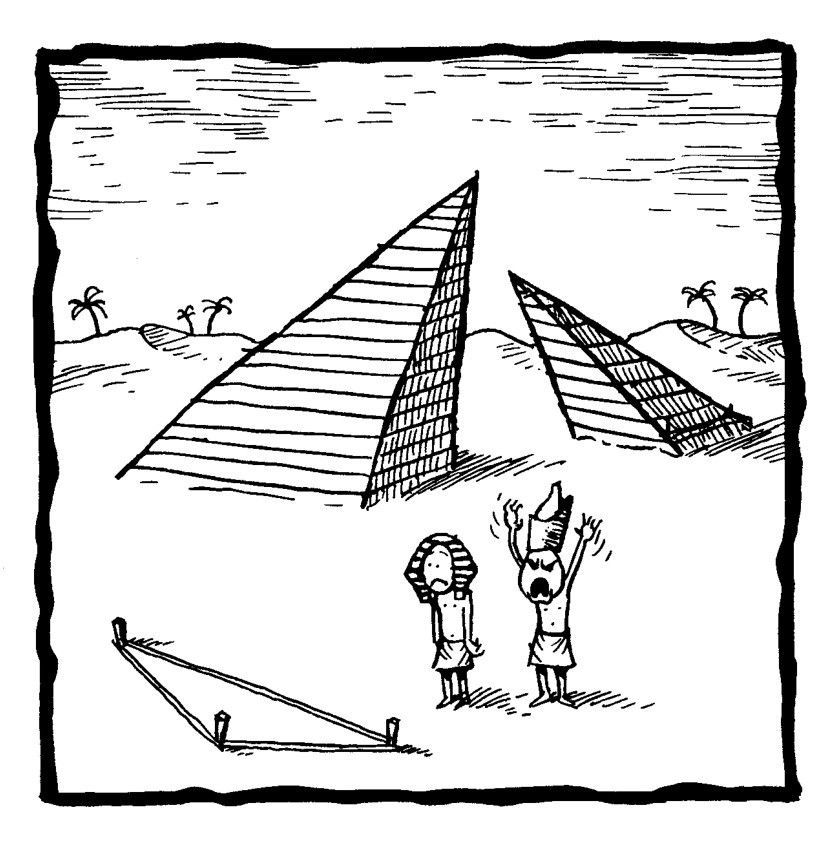
[1] Pimp在英语中有“皮条客”的意思；dik音同dick（阴茎）；bumfit字面意思是“适合屁股”。因此后文才会说这句话并没有什么“不光彩”的。——译者注
[2] Duodecimal中的decimal是十进制的意思。——编者注
[3] 以下均为度量体积的英制单位。1吉耳≈142毫升。——译者注
[4] 马拉松赛跑全程的距离约为26英里（42千米）。——编者注